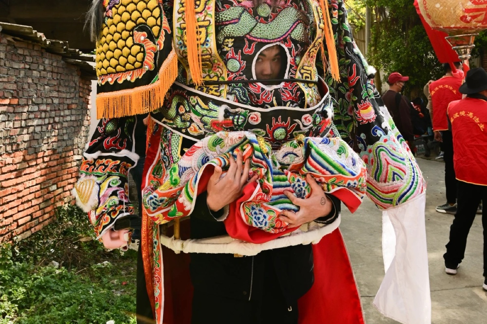
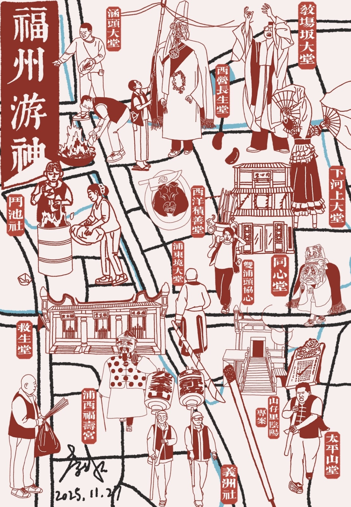
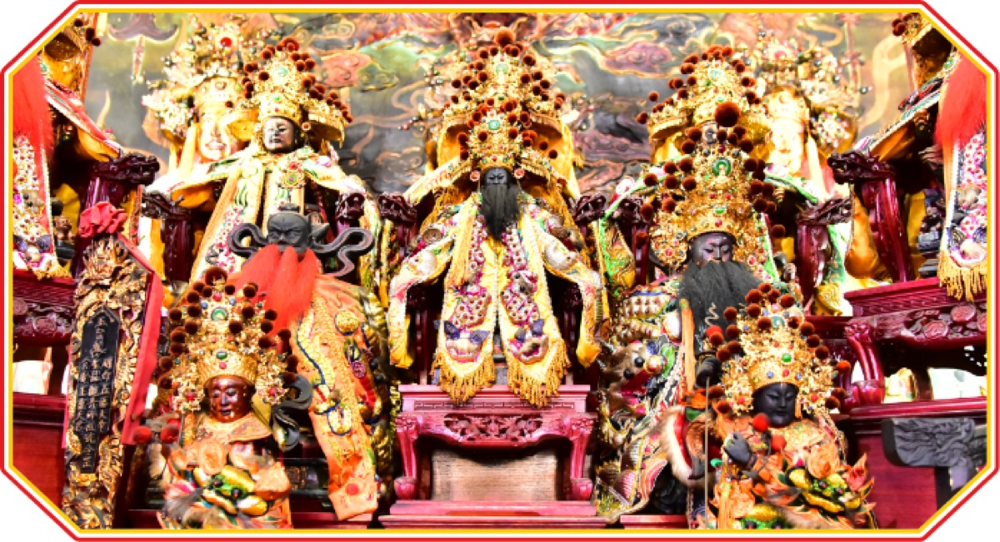
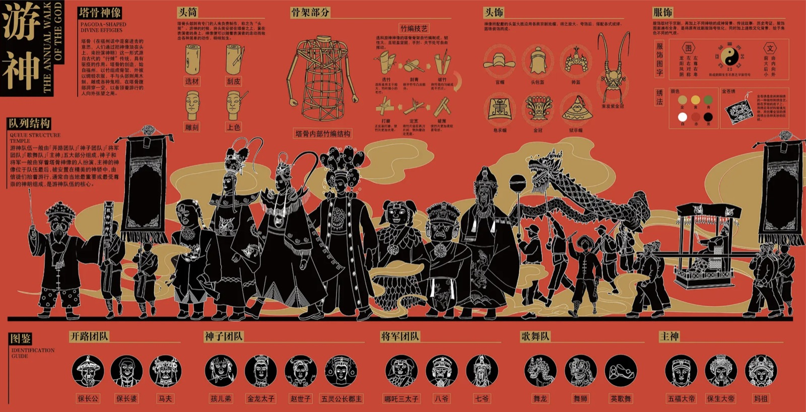
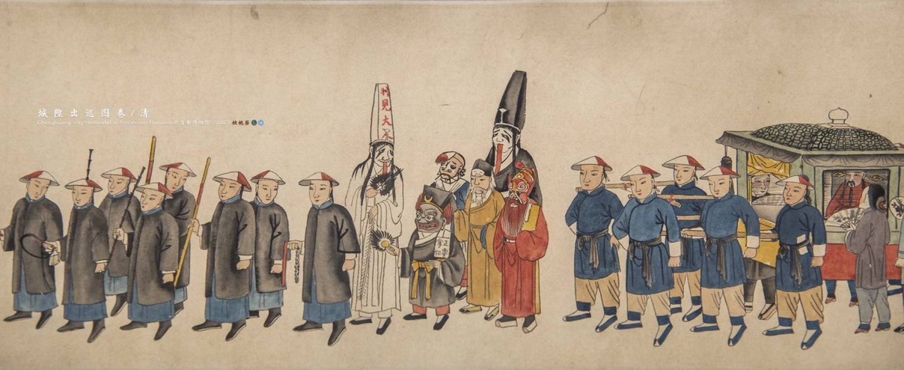
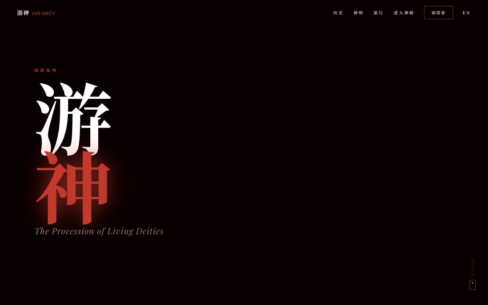
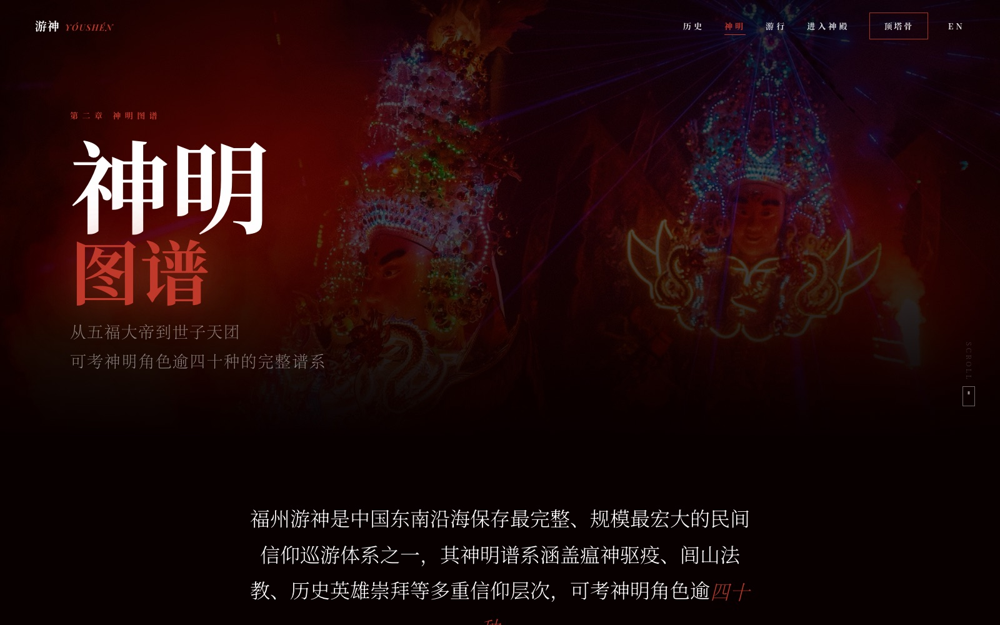

The structure under the spectacle
Trained carriers parade deity figures along routes of up to 10 km, with percussion, flag bearers and vanguard teams. Three systems shape how it works.
A digital archive and interactive installation for Fuzhou's procession of living deities.
Yóushén is a folk ritual from Fuzhou. During the Lunar New Year, handcrafted tāgǔ deity figures are carried out of temples and through local community territories. The procession carries local belief, craft knowledge, ritual order and community memory.
In 2024 it went viral on short-video platforms, but its cultural logic stayed hard to access. This project gathers scattered material into a digital archive, then extends it into an exhibition where a projected tāgǔ responds to the visitor's body.
Short videos carry the spectacle. The craft, the carriers and the order behind it rarely make the cut. Drag across the image.

On screenUnderneathTrained carriers parade deity figures along routes of up to 10 km, with percussion, flag bearers and vanguard teams. Three systems shape how it works.




Interviews with an online viewer, a local, a diaspora student and a craft inheritor, then a questionnaire to see whether the pattern held more broadly.
"The first thing I noticed was how powerful it looked. The costumes, the movement, the whole atmosphere really caught my attention. I just didn't really know what was going on."
"I usually send them videos because they look really impressive. But when they start asking what the different things mean, sometimes I don't really know how to explain it."
"Mostly through my family and videos online. I know it's connected to where my family is from, but I've noticed that a lot of the information is in Chinese, so sometimes it's hard for me to really understand what everything means."
"Most people look at the deity figures first because they're very eye-catching. They usually don't think much about how the figures are made or how much work goes into them."
Each finding opened an opportunity, and each opportunity a set of ideas. The ideas were combined into three connected outputs. Hover a column to trace it.
Each tāgǔ was photographed in 360°, reconstructed with Tripo AI, then cleaned and rigged in Blender. These are the live models from the digital temple. Drag to turn them.
When a visitor picks a deity, its rigged GLB loads into a three.js scene and connects to a retargeting layer. MediaPipe reads body landmarks from the camera. Each body direction is mapped onto the avatar's bones, limited to plausible joint ranges and smoothed frame by frame, so the tāgǔ moves with you without popping through itself.
// HumanoidRetargeter.update: one frame const dirs = this.computeHumanDirections( worldLandmarks, valid); const basis = this.computeHumanBodyBasis(worldLandmarks); const toAvatar = this.avatarRestBasis.clone() .multiply(basis.invert()).normalize(); const targets = this.applyJointLimits( this.toAvatarTargets(dirs, toAvatar)); const smoothed = this.stepDirections(targets, dt); const pose = this.applyBodyConstraints( smoothed, previous, dt); // Feed the collision-free pose back as the next // frame's start, so limbs slide along the body // instead of popping through it.
Four chapters in Chinese and English: origins, the deity pantheon, procession anatomy, and a digital temple where 21 deity models stand in a hall and corridor.


